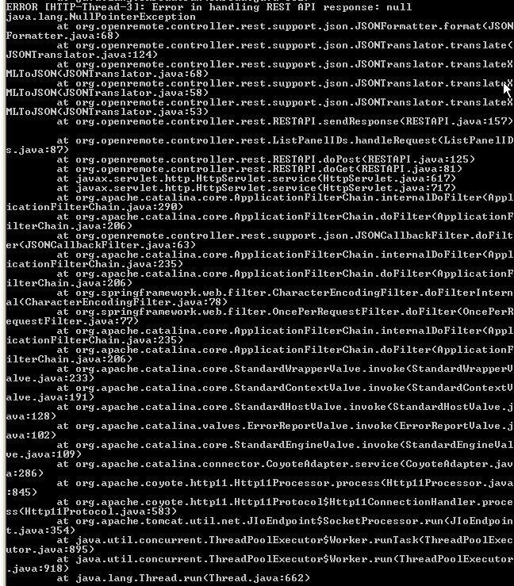

Hello.
I'm running OpenRemote using my WindowXP. I can access http://localhost:8080/controller and have sync successfully. But when I go to http://localhost:8080/webconsole, I performed a "search" but it returns nothing.
What could be wrong? Why can't it detect itself as a controller while it can detect another controller if i run OpenRemote on Raspberry Pi?
I also noticed an error in the terminal:
Error [HTTP-Thread-3]: Error in handling REST API response: null java.lang.NullPointerException
What does that mean?

{kind=link}
|
Can you post the full stack trace that comes after the NullPointerException so we know where it originated from? |
|
Hi! I've attached the image in the post. |
|
Thanks. That seems like it could be a bug. The main cause might be earlier which is causing the request or request URI to become null but nevertheless the error should be handled better to indicate what might be going wrong. I'll need to investigate in more detail later. |
|
Thank you so much! |
|
If you're still seeing the null error from the controller you can try the following patched binary: OpenRemote-Controller-2.1.0_FM_JSONTranslatorNPE.zip It should: a) give a more clear error statement in the logs/console of which XML string is causing the null error b) give a proper JSON response string back to the calling control panel |